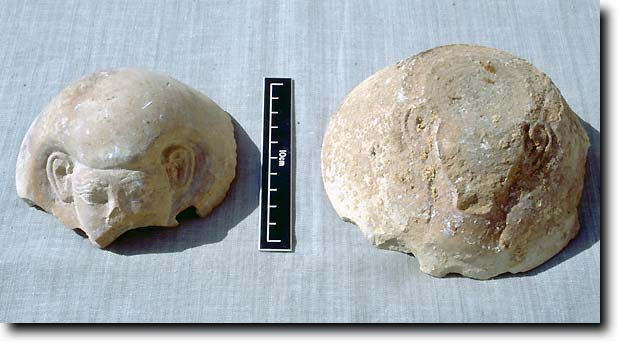
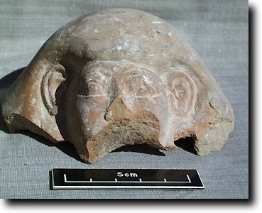
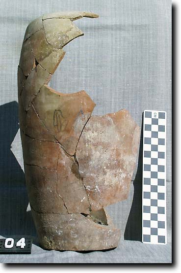

- Home
- Finds home
- Finds by date
- Finds by type
- Conservation
- Slideshow
- Site general
18th dynasty canopic jars
|
Canopic jars, vessels for containing the mummified internal organs of the body, go back to the Old Kingdom. Four jars are traditionally found, and the normal practice up to the end of the New Kingdom was to provide them with human heads. After that point,they tend to take the mixture of animal and human heads associated with the deities who protect the organs. Two pottery jar lids with human heads have been found in the burial of Senneferi. With their large ears, they are typical of the 18th dynasty. Whether they are part of the same set is very likely. Parts of four ceramic jars have also been identified. They bear just the name of the protective deity, written horizontally in ink. This is not unknown, but perhaps not all that common. We have parts of the names of all four deities: Qebehsenuef, Hapy, Imsety and Duamutef. |
|
 |
|
Two ceramic Canopic jar lids with human heads. That on the right seems to have been composed of a separate piece of material for the top of the head |
|
 The face of the canopic in the upper picture
One of the jars assembled to the rim, together with the head in the other photos. The name of Hapy is just visible in the centre. |
 |
For Third Intermediate Period canopics, click here
© Nigel Strudwick 1997-2016